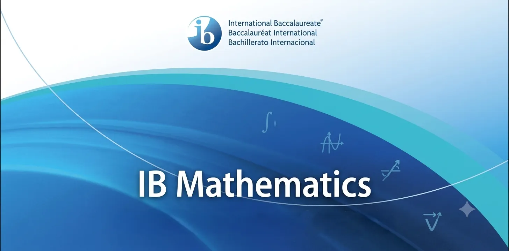
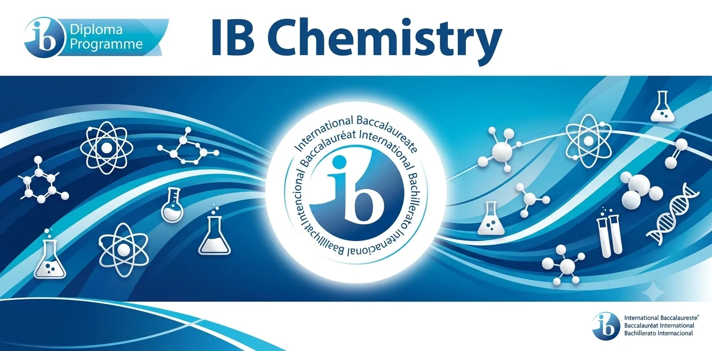
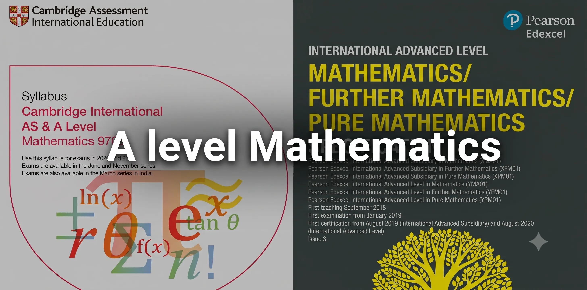
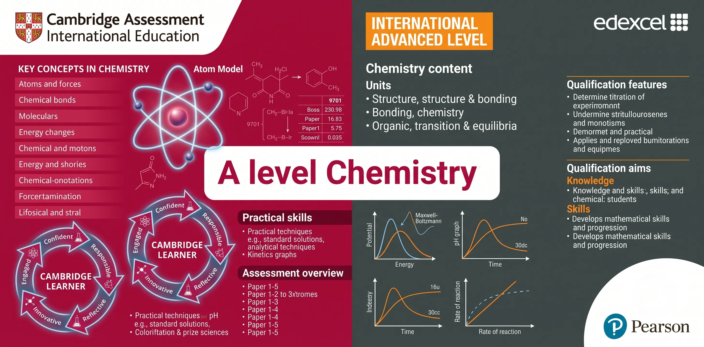
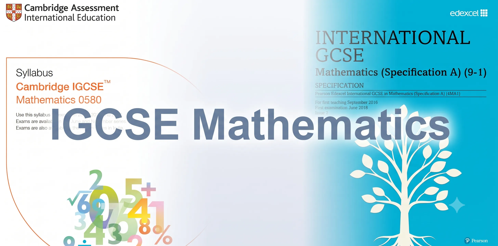
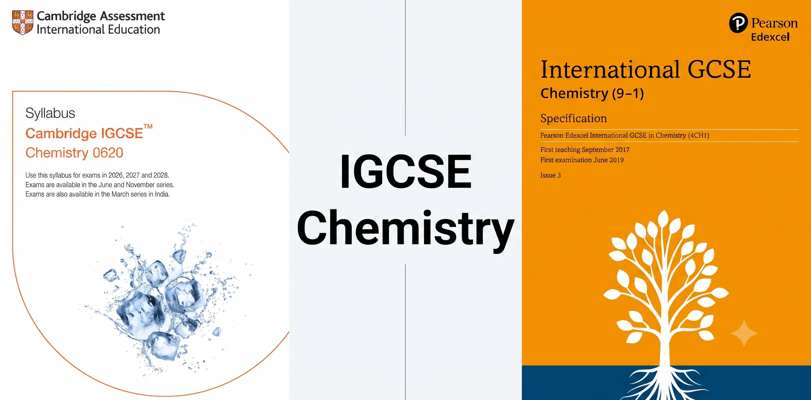
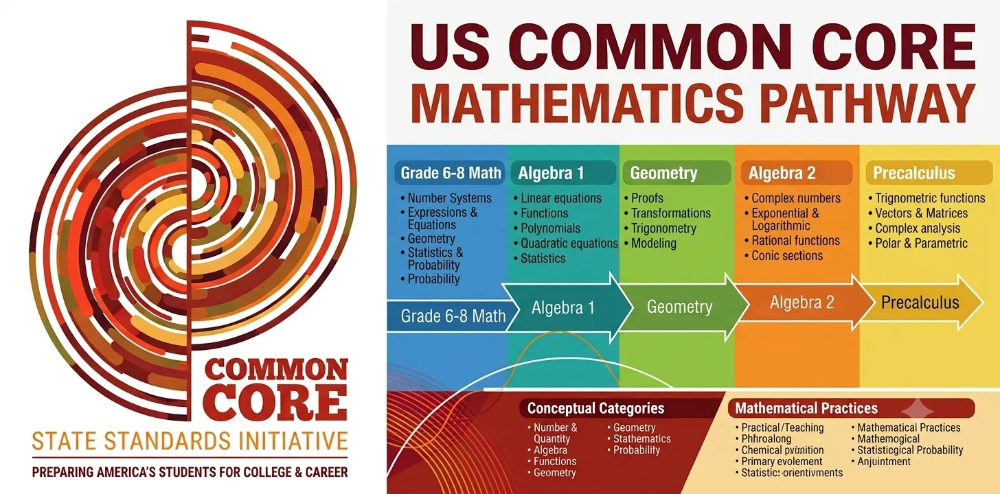
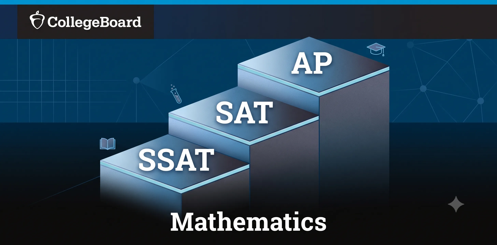

NKK-Education Hub
Premium Academic Gateways for International Mathematics & Chemistry
NoteStudent Navigation Guide:
Please select any of the curriculum cards below to navigate directly to the respective lecture notes, formula guides, and past paper databases curated for international assessments.
Academic Gateways

IB Mathematics
International Baccalaureate Math Preparation
- Focus: Comprehensive study guides for Analysis & Approaches (AA HL/SL) and Applications & Interpretation (AI HL/SL).
- Features dynamic past paper databases and progress-tracking checkpoints to organize your learning.
- Explore Now →

IB Chemistry
International Baccalaureate Chemistry Portal
- Focus: Conceptual study notes structured around the core axes of Structure and Reactivity.
- Contains detailed topic checklists, past papers, and formula guides tailored to the new IBO syllabus.
- Explore Now →

A-Level Mathematics
Advanced Level Mathematics (British System)
- Focus: Specialized resources for major boards including CIE, Edexcel, and others.
- Fully supports modular structures across Pure Mathematics, Mechanics, and Probability & Statistics.
- Explore Now →

A-Level Chemistry
Advanced Level Chemistry (British System)
- Focus: Structured revision notes for Physical, Inorganic, and Organic Chemistry modules.
- Supports comprehensive preparation for CIE and Edexcel boards with reaction mechanisms and practical guides.
- Explore Now →

IGCSE Mathematics
International GCSE Mathematics Prep
- Focus: Foundation bridging for junior secondary pathways including CIE 0580, CIE 0607, and Edexcel 4MA1.
- Key topic summaries, past paper search filters, and worksheets to transition smoothly to senior mathematics.
- Explore Now →

IGCSE Chemistry
International GCSE Chemistry Prep
- Focus: Comprehensive notes covering fundamental concepts for CIE 0620 and Edexcel 4CH1.
- Also provides resources for IGCSE Coordinated & Combined Sciences chemistry sections.
- Explore Now →

Common Core Mathematics
US Curriculum Mathematics Prep
- Focus: High school courses covering Algebra 1, Geometry, Algebra 2, and Pre-Calculus.
- Now includes specialized study guidelines and past papers for US Math Grade 6-8.
- Explore Now →

SAT & AP Prep
Standardized Admission Test Preparation
- Focus: Target preparation for SSAT Quantitative, Digital SAT Math (with Desmos calculator guides), AP Calculus AB/BC, and AP Statistics.
- High-yield exam strategies, formula sheets, and past paper search databases.
- Explore Now →